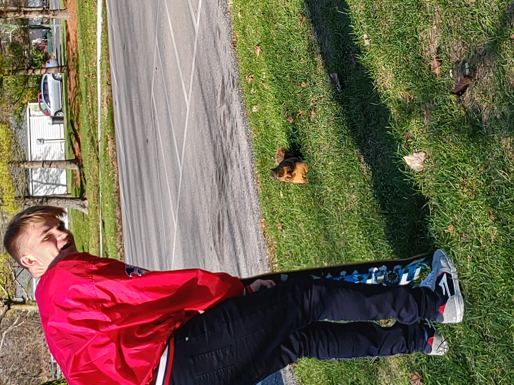
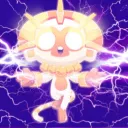
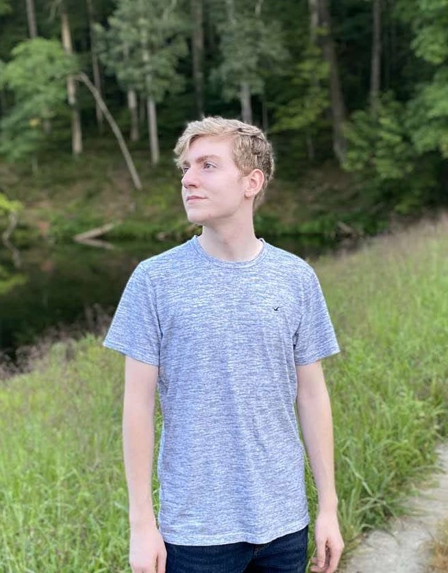

About Us
The Akimbo eSports team was founded in mid 2019, it has been in great tournaments starting in 2020. This team has had 15 major competitions and countless competitions since then. Original founder, Gavin Bunnell, is the head of the team and brought everybody together. The team started out as a small friend group who played games every day. We believe in good morals and not being grumpy from a lost game.
We believe that its in the best interest that we keep the games that we play to a low number. The big two games that we have the most focus in is, Counter-Strike: Global Offensive 'CS:GO' and Tom Clancy's Rainbow Six Siege. These games hold some of our highest skilled players on the team. footage can be found under the Games tag at Gameplay.
The Team
Gavin Bunnell
Gavin Bunnel, also known as, Anakin's arm, is the founder/Leader of Akimbo eSports. He only plays Tom Clancy Rainbow Six Siege competitively as the team leader.
Alex Welty

Alex Welty, also known as, Wetly, is the admin of Akimbo eSports. He plays Counter-Strike Global Offensive and Rainbow Six Siege Competitively.
He claims to eat nails for breakfast. He is known for being the humorous guy of the group.
Without him, we wouldn't be having as much of a fun time.
Quotes: “Don’t do it until you get it right, do it until you don’t get it wrong.”, “Lmao bad gg ez pz”
Immortal Giant
Immortal Giant is a member of the Akimbo eSports team. He plays Counter-Strike competitively and many other games
for fun. He is a big inspiration to the team and reminds everybody how great they are.
Quote: "One life one opportunity, take your shot when you have the chance or live the moment in regret."
Caption Vandy
Caption Vandy, also known as, Austin, is a competitive gamer in many games but on the team he competes in Halo, CS:GO, and Rainbow Six Siege. He also plays some of the other games but those are his primary games. He is the backbone to the team and without him, the team might fall into chaos.
MotoXAlive
MotoXAlive, also known as, Chase, is a very competitive gamer, he plays Rainbow Six Siege and Halo competitively. He enjoys pizza and is one of the console gamers of the group. He shows us that console gamers really means something to the team. He is the balance between the PC eSports and Console.
JurassicVader
JurassicVader, also known as, Spencer, is the author of this website. He believes that every team needs to cover all parts and he covers the communication and does the advertising for the group. He also plays Rainbow Six Siege, CS:GO, and Halo.
Supporters of Akimbo eSports
Amazing Bwag, Adibarex, Adibaasaurus Rex, Disguised Giraffe, Ad1b4, IHasInsides, ingeniousWilt, JajaWillTunn, WilhelmHazzle, Ulfric Stormcloak, DragonBorn2, Stormcloak, Whiterun Guard, thatRandomDragon, Skyrimlol, illegal BunniZ, MagicSkittle, CalculatorJoe,
TooManyPicklezz, WaaWaa889, BluetoothJamz232, AlexaHomeDevice, YouTube Premium offline, Thermometer, electricSprayBottle, BluePenguin, IamEggg
Thank you to all who Support, Akimbo eSports.